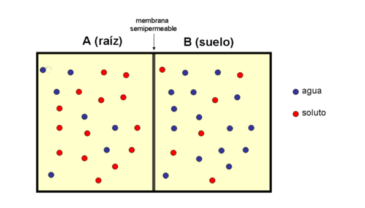

La otra función fundamental de la membrana celular es el de la permeabilidad selectiva.
Es decir la capacidad de permitir que ciertas sustancias y no otras, pasen a través de la membrana y entren o salgan de la célula.
Las células para poder sobrevivir necesitan tomar y desechar al medio que las rodea sustancias como el agua,
el oxígeno, el dióxido de carbono, la glucosa, los nutrientes, los compuestos nitrogenados, etc.
Es por ello que el transporte de sustancias a través de la membrana es fundamental.
La capacidad de las moléculas de atravesar la membrana, depende de la doble capa lipídica y de las proteínas.
El tamaño y la capacidad de disolverse en la capa de lípidos, es fundamental para que una molécula pueda atravesar o no la membrana celular.
Se conocen varios tipos de transportes que se pueden resumir de la siguiente manera:
Transporte pasivo
Es aquel que se realiza con poco o nada de gasto energético. Por medio de este tipo de transporte la célula incorpora o elimina moléculas pequeñas (dos o tres átomos), como el agua, el oxígeno y el dióxido de carbono).
Dentro de este tipo de transporte se halla la difusión, la cual se define como el paso de una sustancia a favor de un gradiente de concentración, es decir desde un lugar en donde se halla más concentrada hacia otro en donde está menos concentrada (Fig. 1). Por este medio ingresan y salen moléculas de pequeño tamaño, como el agua, el oxígeno y el dióxido de carbono.
Por este proceso el agua del suelo ingresa a las células de la raíz de la planta.
Se denomina ósmosis a la difusión hacia el interior de la célula del agua (el agua tiene la capacidad de fluir entre la capa de lípidos). Cuando la difusión del agua se realizan en sentido contrario se llama plasmólisis. En muchas ocasiones, junto con el agua ingresan sustancias disueltas en ella, en este caso se trata de diálisis.
Otro tipo de transporte pasivo es el que está mediado por las proteínas de membrana. A este tipo de transporte se lo conoce con el nombre de difusión facilitada. Existen dos tipos de proteínas que participan en este tipo de transporte: las de canal y las transportadoras o carriers.
Las primeras presentan canales, los que se abren y cierran, generando poros. Las sustancias fluyen a través de estos canales siguiendo una diferencia de gradiente, es decir desde un sitio de mayor concentración hacia otro de menor concentración.
Por este mecanismo se transportan iones de sodio, calcio, potasio y cloro. Es de hacer notar que los canales son selectivos, ya que permiten el paso de ciertos iones.
El segundo tipo de proteínas, las transportadoras, funciona de manera diferente a las anteriores, dado que se unen a la sustancia y los transportan a través de la membrana. Este tipo de transporte se puede dar tanto a favor de gradiente (transporte pasivo), como también contra gradiente (transporte activo). La glucosa es transportada por este mecanismo.
Hay tres tipos proteínas de transporte:
• uniportadora: transportan una única sustancia de un lado a otro de la membrana.
• simportadoras: transportan dos sustancias en un mismo sentido.
• antiportadoras: transportan dos sustancias en sentidos opuestos.
Transporte activo
Es aquel que se realiza con un marcado gasto energético, en el cual las sustancias ingresan o salen en contra de una gradiente de concentración, es decir desde un lugar de menor concentración hacia otro de mayor concentración.
Las células tienen la capacidad de incorporar sustancias del medio circundante mediante vesículas, este proceso de denomina endocitosis.
Todas las células eucariotas tienen la capacidad de captar macromoléculas del medio por endocitosis, incluso partículas grandes y hasta células enteras. De acuerdo con el tipo de material que se incorpore se diferencia entre fagocitosis, al ingreso de sustancias sólidas y pinocitosis, al ingreso de partículas disueltas en sustancias líquidas (Fig. 4).
El transporte en sentido contrario, mediado por vesículas se denomina exocitosis.

Pagina anterior
Pagina siguiente
Agradecimientos y colaboraciones
|
.jpg)